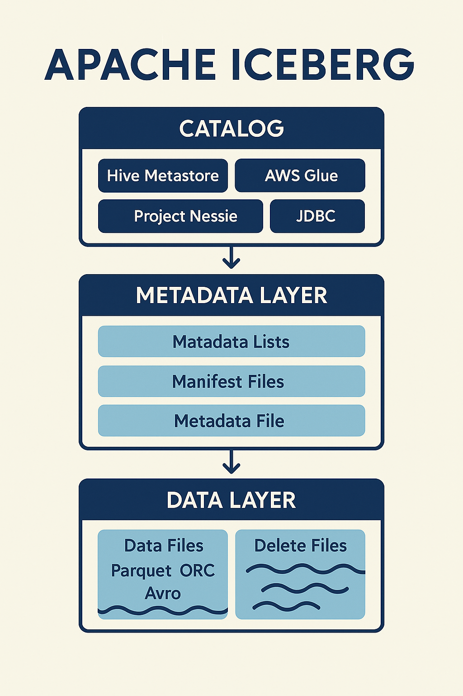

Куратор раздела

Подвальный Артем, Data Engineer
Хочешь перейти в дата-инженерию, но не знаешь с чего начать? Пиши - составим резюме, продумаем твое развитие https://t.me/ampodvalniy
Хочешь улучшить текущий раздел, внести недостающее или поправить формулировку? Предлагай PR и тегай @Artemlin6231
Немного об этой главе
Многие компания начинают сейчас переходить на Iceberg и концепцию Lakehouse. Так что знакомство с данным форматом данных позволит держать руку на пульсе)
Приятного изучения)
Apache Iceberg
Введение
Данные стали ключевым активом для организаций: они необходимы для анализа тенденций, построения прогнозов и поддержки принятия решений. Рост объёмов и скорости генерации данных потребовал появления новых архитектур хранения и обработки.
Раньше использовались: - Хранилища данных (Data Warehouse) — надёжные, но дорогие и ограниченные только структурированными данными. - Озёра данных (Data Lake) — гибкие и дешёвые, но без гарантий ACID и полноценной работы с транзакциями.
Появился запрос на архитектуру, которая сочетает гибкость озёр данных и надёжность хранилищ.
Что такое Apache Iceberg?
Apache Iceberg — это открытый табличный формат для озёр данных, который: - Абстрагирует физическое хранение файлов. - Обеспечивает транзакционность (ACID) и управление версиями (snapshots). - Поддерживает эволюцию схем и секционирования без миграции данных. - Делает возможной эффективную SQL-аналитику прямо в Data Lake.
Ключевые преимущества
- Гибкость: хранение любых форматов данных (Parquet, ORC, Avro).
- Транзакции: безопасные вставки, обновления, удаления.
- Time Travel: доступ к состоянию таблицы в прошлом.
- Совместимость: интеграция с Apache Spark, Flink, Trino, Dremio и другими движками.
- Масштабируемость: изначально разработан для работы с петабайтами данных (Netflix).
Архитектура Apache Iceberg
Apache Iceberg построен по многоуровневой архитектуре, которая разделяет данные, метаданные и каталог. Такой подход обеспечивает масштабируемость, гибкость и поддержку транзакций ACID в озёрах данных.

1. Слой данных (Data Layer)
- Хранит фактические данные таблицы.
- Элементы:
- Файлы данных (Parquet, ORC, Avro) — содержат строки таблицы.
- Файлы удаления — описывают строки или файлы, которые были удалены
(
DELETE,MERGE). - Данные обычно размещаются в распределённых файловых системах (HDFS) или объектных хранилищах (Amazon S3, ADLS, GCS).
- Слой независим от вычислительного движка, что делает его универсальным.
2. Слой метаданных (Metadata Layer)
- Центральная часть Iceberg, отвечающая за структуру и историю таблицы.
- Состоит из:
- Файлов манифеста — список файлов данных и статистика по ним (кол-во строк, min/max значения).
- Списков манифестов — объединяют манифесты в один снимок (snapshot).
- Файлов метаданных — определяют схему, секционирование, список снимков.
- Puffin-файлов — хранят расширенную статистику и метрики.
- Метаданные образуют дерево, что позволяет эффективно планировать запросы, используя partition pruning и статистику.
3. Каталог (Catalog Layer)
- Управляет именами таблиц и указывает на актуальные файлы метаданных.
- Вместо хранения путей к директориям (как в Hive) Iceberg работает с ссылкой на последний мета-файл.
- Поддерживаемые реализации:
- Hive Metastore
- AWS Glue
- Project Nessie
- JDBC/REST-каталоги
- Каталог обеспечивает согласованность между различными движками (Spark, Flink, Trino и др.).
Ключевые особенности архитектуры
- ACID-транзакции без централизованной СУБД.
- Эволюция схемы и секционирования без миграции данных.
- Time travel — возможность читать таблицу в прошлом состоянии.
- Масштабируемость — изначально спроектирован для работы с петабайтами данных.
Файлы удаления и стратегии записи (MOR vs COW)
В Apache Iceberg операции DELETE и UPDATE реализуются через специальные
файлы удаления (delete files). Они позволяют эффективно управлять изменениями,
не переписывая сразу все данные.
Типы файлов удаления
- Position Deletes
- Содержат ссылки на конкретные строки в файле данных по смещению (row position).
-
Подходят для точечных обновлений и удалений.
-
Equality Deletes
- Хранят условие удаления по значениям столбцов (например:
user_id=12345). - Удобны для массовых удалений или обновлений по ключу.
Стратегии записи
1. Copy-on-Write (COW)
- При обновлениях или удалениях Iceberg переписывает целый файл данных, исключая ненужные строки.
- Плюсы:
- Простая модель — при чтении не требуется дополнительная обработка.
- Быстрое и лёгкое чтение.
- Минусы:
- Запись дороже по времени и ресурсам (особенно при малых изменениях).
- Когда использовать:
- Таблицы с редкими изменениями.
- Сценарии, где приоритет — скорость чтения.
2. Merge-on-Read (MOR)
- Изменения фиксируются во файлах удаления, а переписывание файлов откладывается.
- При чтении движок объединяет (merge) данные и delete-файлы.
- Плюсы:
- Быстрая запись, минимальные накладные расходы на обновления.
- Подходит для потоковой загрузки (streaming).
- Минусы:
- Более тяжёлое чтение (нужно применять delete-файлы поверх данных).
- Когда использовать:
- Таблицы с частыми обновлениями.
- Real-time аналитика, где важна скорость записи.
Сравнение COW и MOR
| Характеристика | Copy-on-Write (COW) | Merge-on-Read (MOR) |
|---|---|---|
| Скорость записи | Медленная (переписывание) | Быстрая (delete files) |
| Скорость чтения | Быстрая | Медленнее (merge при чтении) |
| Простота модели | Простая | Более сложная |
| Использование | Batch-аналитика | Streaming и частые апдейты |
Примеры работы с таблицами(отличные от обычного SQL)
```python
запуск spark-сессии с iceberg
from pyspark.sql import SparkSession
spark = ( SparkSession.builder .appName("IcebergExample") .config("spark.sql.catalog.my_catalog", "org.apache.iceberg.spark.SparkCatalog") .config("spark.sql.catalog.my_catalog.type", "hive") .config("spark.sql.catalog.my_catalog.uri", "thrift://localhost:9083") .getOrCreate() )
Создание таблицы
spark.sql(""" CREATE TABLE my_catalog.db.orders ( order_id BIGINT, customer_id BIGINT, amount DECIMAL(10,2), created_at TIMESTAMP ) USING iceberg PARTITIONED BY (days(created_at)) """)
Time travel (по snapshot-id)
spark.sql(""" SELECT * FROM my_catalog.db.orders VERSION AS OF 918273645 """).show()
Time travel (по времени)
spark.sql(""" SELECT * FROM my_catalog.db.orders TIMESTAMP AS OF '2025-09-28 14:00:00' """).show()
Компактизация файлов
spark.sql(""" CALL my_catalog.system.rewrite_data_files('db.orders') """)
Очистка старых снапшотов
spark.sql(""" CALL my_catalog.system.expire_snapshots('db.orders') WHERE committed_at < TIMESTAMP '2025-09-01 00:00:00' """)
Удаление delete-файлов
spark.sql(""" CALL my_catalog.system.remove_orphan_files('db.orders') """)